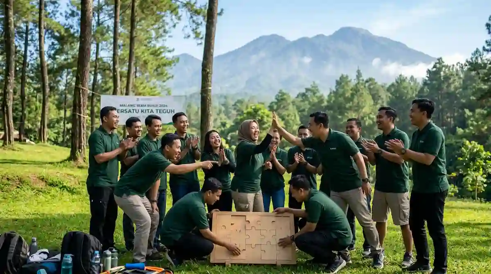

Mengapa Motivasi Tim Bisa Menurun?
Dalam dinamika organisasi modern, penurunan motivasi karyawan bukanlah hal yang asing. Kondisi ini jarang sekali disebabkan oleh satu faktor tunggal, melainkan merupakan akumulasi dari berbagai tekanan kerja sehari-hari. Rutinitas kantor yang monoton, beban target bulanan yang terus menumpuk, kurangnya apresiasi terhadap pencapaian kecil, hingga komunikasi yang tersendat antaranggota divisi secara perlahan dapat mengikis antusiasme kerja.
Tim yang pada awalnya sangat bersemangat pun dapat mengalami tingkat kejenuhan tinggi (burnout) setelah melewati periode kerja yang padat tanpa jeda yang cukup. Ketika kejenuhan melanda, produktivitas akan menurun, tingkat kesalahan meningkat, dan hubungan interpersonal di dalam tim menjadi lebih rentan terhadap gesekan sosial.
Memahami akar penyebab penurunan motivasi sangat krusial sebelum memutuskan jenis kegiatan yang akan diambil. Jika tim Anda membutuhkan penyegaran mental, suasana baru, dan penguatan rasa kebersamaan, maka program outbound merupakan pilihan yang sangat efektif. Namun, jika masalah dasarnya terletak pada beban kerja yang tidak realistis, ketidaksesuaian kompensasi, atau konflik struktural, hal-hal tersebut tentu perlu diselesaikan melalui kebijakan manajemen secara terpisah. Pemahaman mendalam mengenai efektivitas kegiatan kelompok ini juga dibahas pada artikel manfaat team building outbound untuk karyawan perusahaan.
Bagaimana Outbound Dapat Menyegarkan Semangat Tim?
Program outbound motivasi kerja tidak hanya menawarkan hiburan luar ruang biasa, melainkan bekerja melalui beberapa mekanisme psikologis dan pembelajaran berbasis pengalaman (experiential learning) yang sistematis:
- Suasana Baru di Alam Terbuka: Lingkungan pegunungan Malang dan Batu yang sejuk memberikan jeda fisik maupun mental dari rutinitas meja kerja, membantu meredakan stres harian secara efektif.
- Pengalaman Sukses Bersama (Shared Success): Melalui simulasi permainan, tim diajak menghadapi tantangan dan berhasil menyelesaikannya bersama-sama. Hal ini membangkitkan kembali rasa percaya diri individu maupun tim.
- Pencairan Sekat Komunikasi: Interaksi santai di luar konteks hirarki pekerjaan membuat anggota tim dapat tertawa bersama, menurunkan rasa canggung, dan mempererat hubungan emosional.
- Sesi Refleksi (Debriefing): Fasilitator profesional memandu tim untuk menarik makna dari setiap simulasi permainan dan mengaitkannya secara langsung dengan situasi kerja nyata di kantor.
Dampak dari proses ini bukanlah sekadar kegembiraan sesaat. Bila dirancang dengan tepat, outbound motivasi mampu menyadarkan kembali setiap anggota tentang pentingnya peran mereka, mengapa mereka berjuang bersama, serta betapa besarnya potensi yang bisa diraih ketika tim saling mendukung secara penuh.
Permainan Apa yang Cocok untuk Menyegarkan Semangat?
Pemilihan jenis permainan dalam outbound motivasi sangat menentukan keberhasilan acara. Permainan yang dipilih sebaiknya berfokus pada pencapaian keberhasilan bersama dan rasa saling mendukung, bukan simulasi yang menekan, mempermalukan, atau menyorot kegagalan individu secara berlebihan.
Beberapa contoh konsep permainan yang efektif untuk membangun motivasi antara lain:
- Tantangan Membangun Bersama: Seperti menyusun puzzle raksasa atau membangun struktur pipa air. Permainan ini memberikan bukti visual yang nyata bahwa kolaborasi menghasilkan karya yang utuh.
- Estafet Kelompok & Kecepatan: Mendorong sinergi dan aliran energi positif melalui koordinasi fisik yang dinamis dan penuh tawa.
- Teka-teki Pemecahan Masalah Tim: Simulasi logika yang membutuhkan ide dari setiap anggota, memastikan tidak ada peserta yang merasa terasingkan.
- Permainan Ketekunan (Resilience Challenge): Tantangan yang dirancang agar tim mengalami beberapa kali kegagalan kecil terlebih dahulu sebelum akhirnya berhasil melalui strategi dan ketekunan bersama.
- Lomba Santai Antartim: Menciptakan kompetisi sehat yang dibalut dengan sorak-sorai dan dukungan antarkelompok.
Ragam variasi simulasi games yang menarik lainnya dapat Anda pelajari lebih lanjut di artikel rekomendasi game outbound team building seru di Batu.

Seperti Apa Contoh Susunan Acara Outbound Motivasi?
Rancangan susunan acara yang ideal harus memiliki alur emosional yang jelas, mulai dari pembentukan energi positif, peningkatan tantangan, hingga penurunan alur menuju refleksi yang tenang. Berikut adalah gambaran susunan acara harian yang dapat disesuaikan dengan kebutuhan perusahaan Anda:
| Sesi | Gambaran Isi Kegiatan | Tujuan Sesi |
|---|---|---|
| Pembukaan & Ice Breaking | Pemanasan ringan, perkenalan fasilitator, dan pembagian tim secara acak lintas divisi. | Mencairkan kekakuan awal dan membakar semangat peserta. |
| Permainan Sinergi & Kerja Sama | Eksekusi 2-3 simulasi permainan dengan tingkat kesulitan yang bertahap. | Membangun pengalaman keberhasilan kelompok dan mengasah komunikasi. |
| Istirahat & Makan Bersama | Makan siang, ibadah, dan obrolan santai tanpa membahas pekerjaan kantor. | Mempererat jalinan keakraban sosial antarpeserta secara alami. |
| Sesi Refleksi & Insepsi Nilai | Diskusi terarah bersama fasilitator mengenai komitmen dan visi tim. | Mengaitkan makna permainan dengan nilai-nilai dan target pekerjaan. |
| Komitmen Bersama & Penutup | Setiap tim merumuskan satu ikrar komitmen sederhana untuk dibawa ke kantor. | Mengunci dampak positif agar bertahan lama setelah acara selesai. |
Rundown di atas bersifat fleksibel dan dapat dimodifikasi sepenuhnya sesuai dengan jumlah peserta, durasi waktu yang dialokasikan, serta karakteristik khusus dari tim Anda.
Apakah Outbound Motivasi Cocok untuk Tim Sales?
Tim penjualan (sales & marketing) merupakan salah satu divisi yang paling sering menghadapi tekanan mental tingkat tinggi. Penolakan dari calon klien, kejar-kejaran dengan tenggat target bulanan, serta dinamika pasar yang kompetitif membuat energi dan motivasi mereka sangat mudah turun naik.
Program outbound yang fokus pada ketekunan, kemampuan bangkit dari kegagalan (resilience), dan komunikasi saling mendukung sangat relevan dengan tantangan tim sales. Ketika dikemas dengan tepat, kegiatan ini membantu anggota tim sales menyadari bahwa mereka bekerja dalam satu barisan yang saling menopang, bukan sekadar individu yang saling bersaing internal.
Namun, sangat disarankan untuk menghindari format outbound yang terlalu kompetitif antarindividu dalam tim sales, karena hal tersebut dapat memperbesar tingkat stres yang sudah ada. Pilihlah tantangan yang mewajibkan seluruh anggota mencapai target bersama, lalu kuatkan pemahamannya melalui sesi pemaknaan di akhir kegiatan.
Bagaimana Menjaga Motivasi Tetap Bertahan Setelah Acara?
Tantangan terbesar dari setiap kegiatan pelatihan outdoor adalah menjaga agar energi positif yang tercipta tidak cepat memudar begitu peserta kembali ke rutinitas kantor. Untuk memastikan dampak motivasi bertahan dalam jangka panjang, beberapa langkah tindak lanjut dapat diterapkan oleh manajemen:
- Dokumentasikan Komitmen Tim: Tuliskan poin-poin komitmen yang disepakati saat sesi refleksi dan pajang di area kerja yang sering dilihat bersama.
- Sesi Peninjauan Rutin: Jadwalkan pertemuan singkat setiap minggu atau bulan untuk mengevaluasi apakah semangat dan komitmen bersama masih berjalan dengan baik.
- Pemberian Apresiasi Berkala: Berikan pengakuan tulus terhadap usaha dan pencapaian kecil anggota tim, bukan hanya saat target besar tercapai.
- Energizer Ringan di Kantor: Terapkan permainan singkat atau tradisi pemanasan sebelum rapat internal untuk menjaga suasana kerja tetap ceria dan dinamis.
Bagaimana Peran Atasan dalam Menjaga Motivasi?
Peran pimpinan tim, manajer, maupun direksi sangat menentukan apakah hasil dari acara outbound akan berdampak nyata atau sekadar menjadi kenangan foto bersama. Motivasi yang telah menyala di lokasi kegiatan akan sangat mudah padam apabila tidak mendapatkan respon yang kondusif di lingkungan kerja sehari-hari.
Oleh karena itu, para atasan sangat dianjurkan untuk ikut hadir dan berpartisipasi aktif dalam kegiatan outbound, bukan hanya bertindak sebagai pemantau. Kehadiran atasan yang mau ikut bermain, tertawa, dan mendengarkan masukan tim akan meruntuhkan tembok pemisah secara efektif. Setelah acara berakhir, pimpinan hendaknya secara konsisten menindaklanjuti nilai-nilai yang telah disepakati bersama dalam setiap interaksi kerja harian.
Bagaimana Menyiapkan Kegiatan dengan Matang?
Persiapan yang terencana merupakan kunci utama kelancaran kegiatan outbound motivasi. Mulailah dengan menetapkan tujuan spesifik yang ingin dicapai, menghitung jumlah peserta yang pasti, serta mengalokasikan anggaran yang realistis. Komunikasikan tujuan tersebut kepada pihak vendor outbound agar mereka dapat menyusun modul permainan yang tepat sasaran.
Pilihlah jadwal pelaksanaan ketika tim tidak dalam kondisi dikejar tenggat proyek yang sangat kritis, sehingga pikiran seluruh peserta bisa sepenuhnya fokus pada acara. Selain itu, bagikan informasi mengenai rundown, pakaian yang nyaman, dan perlengkapan pribadi jauh-jauh hari. Panduan persiapan peserta secara mendalam dapat Anda baca di artikel checklist perlengkapan peserta outbound Batu Malang.
Bagaimana Menilai Dampak terhadap Motivasi?
Menilai keberhasilan acara motivasi tidak bisa dilakukan hanya dalam hitungan jam setelah acara usai. Evaluasi sebaiknya dilakukan dalam dua tahap: evaluasi reaksi langsung melalui survei kepuasan singkat setelah acara, serta evaluasi perilaku yang diamati selama beberapa minggu berturut-turut di kantor.
Perhatikan apakah terdapat peningkatan kualitas komunikasi antar-divisi, penurunan konflik internal, peningkatan inisiatif kerja, serta keaktifan karyawan dalam mencapai sasaran tim. Membandingkan indikator suasana kerja sebelum dan sesudah kegiatan akan memberikan gambaran objektif mengenai laba atas investasi (ROI) dari program yang telah dijalankan.
Kesalahan Umum dalam Outbound Motivasi
- Menganggap Outbound Solusi Tunggal: Berasumsi bahwa satu kali acara outbound bisa menyelesaikan semua masalah manajemen internal yang kompleks.
- Memilih Simulasi yang Mempermalukan: Menggunakan permainan yang terlalu menyorot kesalahan individu sehingga membuat peserta merasa rendah diri.
- Ketidakhadiran Manajemen Kunci: Jajaran atasan tidak hadir atau tidak mau ikut terlibat dalam simulasi, sehingga tim merasa kegiatan ini hanya formalitas.
- Pemilihan Waktu yang Salah: Mengadakan acara di tengah-tengah beban kerja terberat, sehingga peserta merasa terbebani dan tidak fokus.
- Amnesia Pasca-Acara: Tidak melakukan tindak lanjut sama sekali di kantor, sehingga semangat dan komitmen tim hilang dalam hitungan hari.